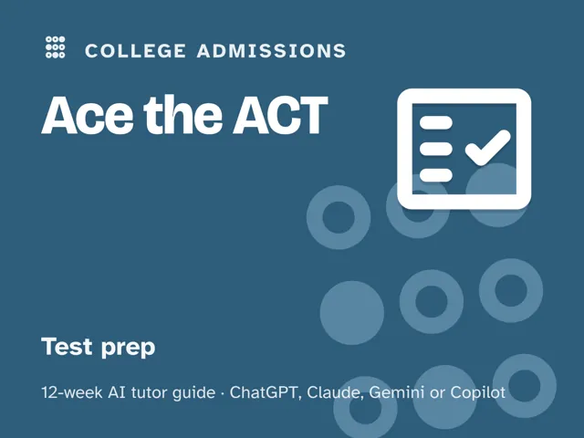
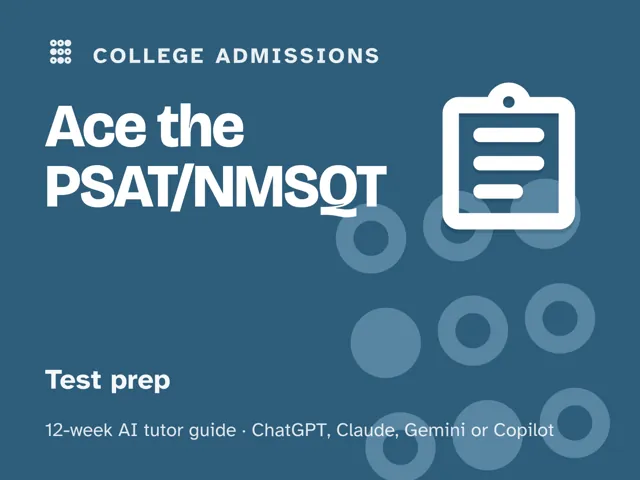

Ace the PSAT/NMSQT
$29Instant download: a PDF to read, a browser copy, and the AI-tutor file you hand straight to any AI assistant.Buy it on Etsy →
Take the free placement check first: 15 minutes, and it names the week to start at.
Stop guessing what to study. This 12-week plan starts with an honest diagnostic that maps your Reading and Writing and Math skills into solid, shaky, and missing, then spends the middle weeks drilling exactly the gaps that map found, with an AI tutor that diagnoses before it teaches and never just hands you the answer. Along the way it covers what the PSAT actually is, how it feeds into National Merit, and how it previews the SAT. The last four weeks are full, timed practice with a review of every single miss, ending in a dress rehearsal and an honest score. No official test content, no score or National Merit guarantees, just a real plan and a coach that keeps you honest.
What you get
This is a deep, digital guide: a "Never used an AI chat assistant? Start here" section walks complete beginners from zero to ready in about five minutes. No paid plan needed; any free modern AI assistant works. From there, you lead one session each week: about 60 minutes in Weeks 1 to 8, and longer in Weeks 9 to 12, which run at real test length. Every session is fully scripted, so no test-prep or AI expertise is required going in. - 12 weekly sessions, each with a plain-language concept explanation, a concrete worked example, a minute-by-minute session plan, a guided AI-tutor focus (diagnose, teach, quiz) with the prompts built into every step, a "show me" checkpoint, common mistakes to watch for, and practice. - An orientation that sets the weekly rhythm and the one rule that makes this work: review every miss until you can explain the "why," not just the right answer. - Four rescue prompts in the front matter: for when you're frustrated, when the tutor starts handing you answers, when a skill feels too easy, and when a section score stalls. - Locality built in: the guide is written in US English, and every prompt tells the AI to use your country or region (given, inferred, or asked) for spelling, units, money, and examples. - A personal gap map you build in week 1 and revisit in week 12 to see exactly what moved.
The 12 weeks
- The Diagnostic: Your Real Starting Line
- Meet the PSAT/NMSQT and Why National Merit Matters
- Command of Evidence
- Grammar and the Writing Questions
- Math Foundations
- Math Problem-Solving
- Pacing: Beating a Shorter Clock
- How the PSAT Previews the SAT
- Timed Practice #1: Full Reading and Writing Section
- Timed Practice #2: Full Math Section
- Timed Practice #3: Full-Length Combined Test
- Full Dress Rehearsal and the Plan Ahead
Who it's for
Sophomores and juniors preparing for the PSAT/NMSQT and National Merit who want a real plan instead of a random stack of practice questions. It's self-directed (built to be run by the student), though a parent can help hold the timer during practice sections and track the weekly rhythm.
Why this instead of a free chatbot
A raw chatbot will answer whatever you paste in, which feels productive but teaches you nothing about your actual weak spots. This pack ships what a chatbot alone lacks: an up-front diagnosis that tells you what to study first, a structured 12-week progression instead of random practice, real timed practice under section time limits (not untimed noodling), and a forced review of every miss for the underlying cause: content gap, misread, or timing. A prep book gives you the same questions regardless of what you actually need; this pack adapts to your gap map.
FAQ
- Is this official College Board or National Merit content? No. This pack is not affiliated with, endorsed by, or connected to the College Board, the National Merit Scholarship Corporation, or any other test maker, and it contains no official or leaked test questions. Use it alongside official practice materials (College Board Bluebook, official practice tests, and current National Merit Scholarship Corporation guidance) as your source of truth for real questions, the current format, and eligibility rules.
- Will this guarantee a certain score or National Merit recognition? No. No pack, book, or tutor can guarantee a score, a Selection Index, or a National Merit outcome, and this one won't claim to. What it offers is an honest diagnostic, focused practice on your actual gaps, and real timed review; the result depends on the work you put in and on rules set by the test maker and NMSC, which this pack does not control.
- Which AI does it use? I've never used one. It works with any modern AI assistant (ChatGPT, Claude, Copilot, or Gemini), and a free version is enough; no paid plan or special software required. The guide's opening section walks complete beginners through setup in about five minutes before week 1 starts.
- Do I need to already know my score? No. Week 1 is the diagnostic. You start wherever you actually are, not where you assume you are.
- Does this year's PSAT even count for National Merit? That depends on your grade and the current NMSC rules. Week 2 walks through how to check this for yourself, since eligibility rules can change and this pack is not the source of truth for them.
- What if my score plateaus? The guide includes a plateau prompt built for exactly this: it changes the approach and targets your specific error pattern instead of repeating the same drills.
- Refunds? Standard marketplace refund policy applies.
$29Instant download: a PDF to read, a browser copy, and the AI-tutor file you hand straight to any AI assistant.Buy it on Etsy →